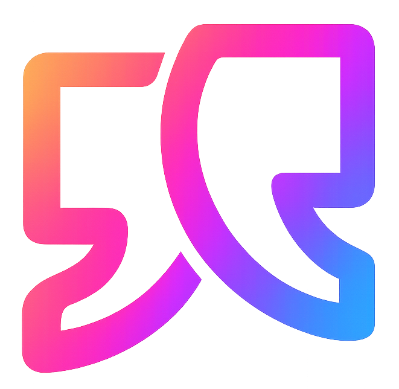
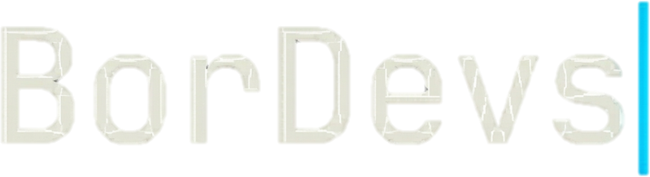
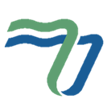

Estudiante avanzado de Ingeniería en Sistemas de la Información, con experiencia aplicada en aseguramiento de calidad, auditoría de procesos y automatización. Trabajo hoy en la industria de tecnología aplicada a la aviación (industria aerocomercial) y de viajes combinando gestión de proyectos, auditoría ITSM y documentación de testing con desarrollo propio de software.

Trabajos propios y académicos en investigación aplicada, calidad y desarrollo.
Investigación aplicada de inteligencia artificial a la validación de infecciones transmisibles por transfusión en bancos de sangre, combinando reglas expertas con modelos de lenguaje.
Suite de pruebas end-to-end con Playwright sobre flujos críticos de navegación, reduciendo los ciclos manuales de validación previos a cada release.
Plataforma con gestión de stock en tiempo real y arquitectura de datos pensada para escalar a múltiples canales de venta.
Ver proyectoPrototipo funcional gamificado para terapia fonoaudiológica pediátrica, traduciendo necesidades clínicas a una solución de software concreta.
Evaluación de protocolos SSL/TLS y RSA para una institución médica, con foco en mejorar la seguridad de su red.

Marca personal y laboratorio de software propio, explorando automatización, desarrollo web y diseño de producto.
Python
JavaScript
SQL
Playwright
Docker
Entornos virtuales
Cursor
VS Code
Figma
Framer
Jira
Modelado estadístico
Excel y Sheets avanzado
